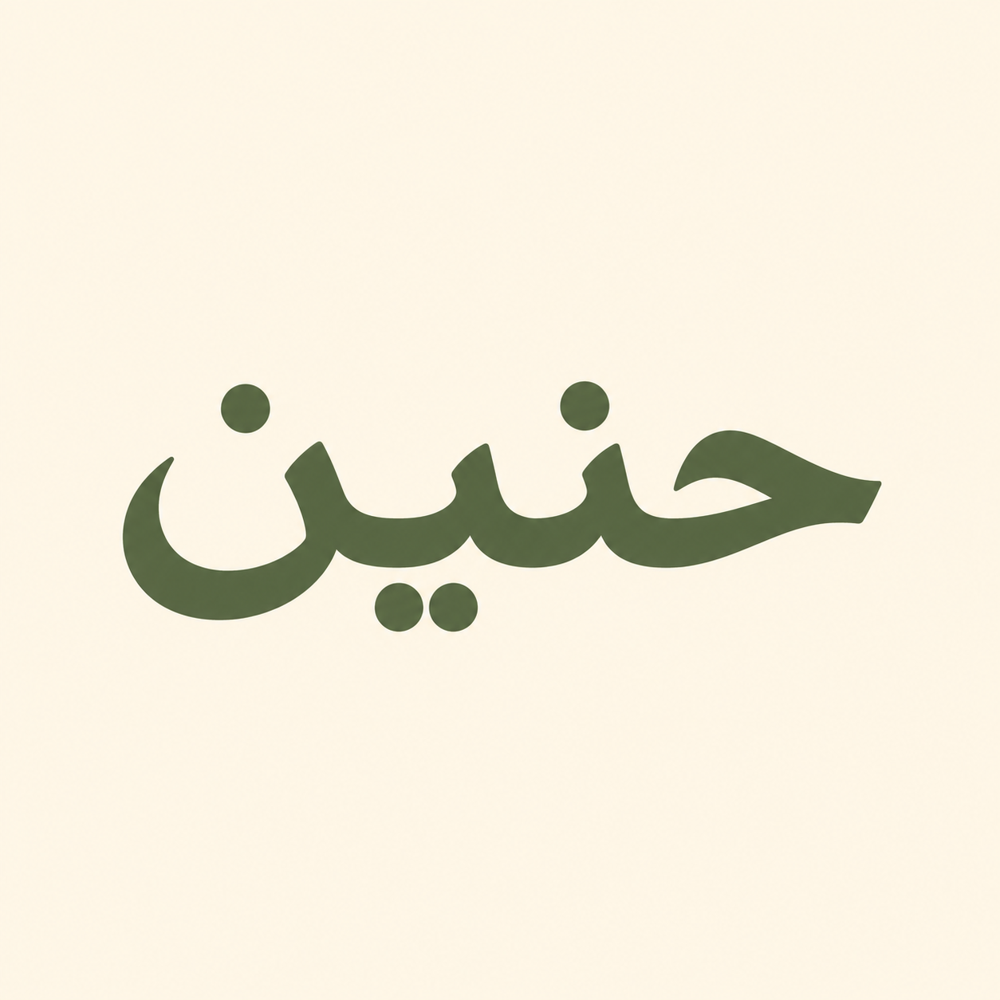

Less detail, more space. Two simpler directions inspired by the clarity of your reference.
The familiar cat and Qur’an, reduced to a clean symbol.

Just حنين. Bold olive lettering and warm cream.
Small previews are 60px. These remain design previews. Earlier directions